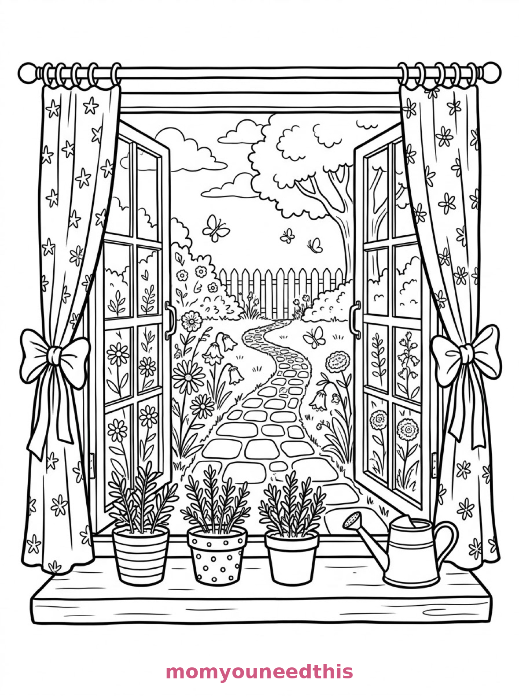
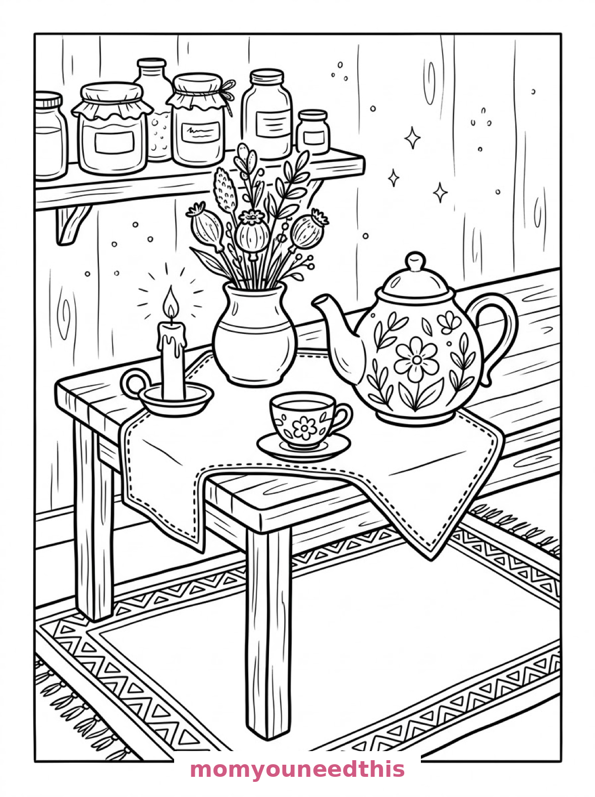
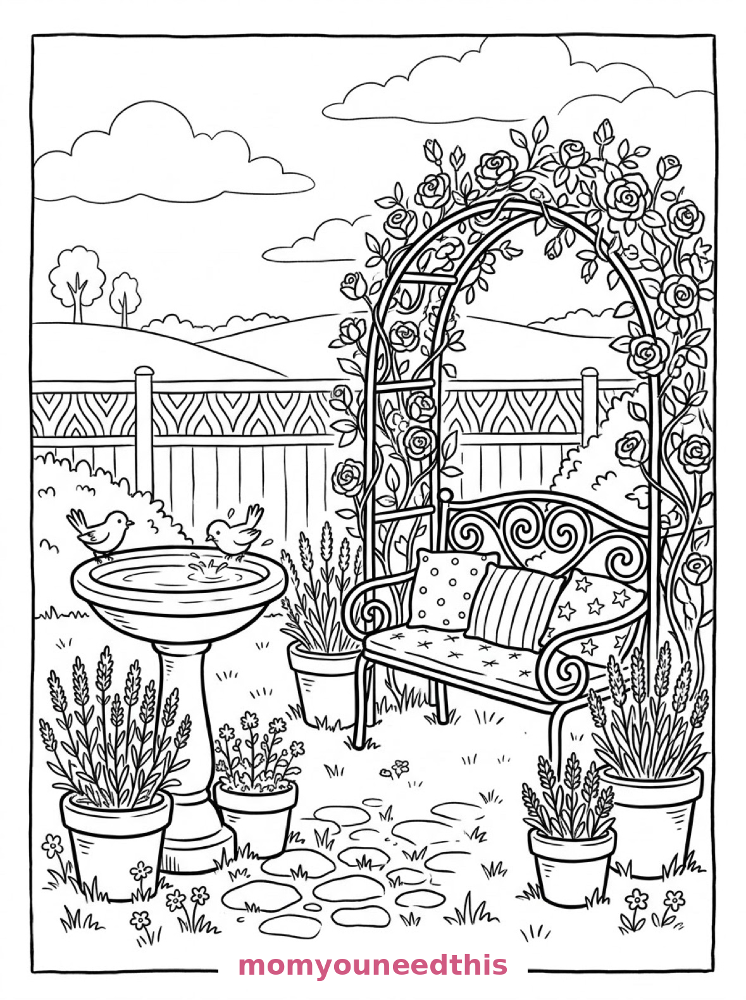

Free Aesthetic Coloring Pages Cottage Window, Tea-Time & Garden Corner Printables
These free aesthetic coloring pages are calm, cozy scenes to color slowly — a cottage window with herbs on the sill, a peaceful tea-time still life, and a quiet garden corner with a bench under a rose arch. Download the set below, print at home on letter-size paper, and let the coloring fun begin. No signup needed.
Last updated: October 23, 2026
Quick Answer
Yes — this page has three free printable aesthetic coloring pages: a cottage window with potted herbs and a flower garden, a cozy still life with a floral teapot and candle, and a garden bench under a rose arch with a birdbath. Bold outlines and big spaces, made for little hands. Download, print on letter-size paper, and hand over the crayons — no signup, no cost.
At a Glance
- Ages: 3–8
- Pages: 3 free printables
- Format: Print at home, letter size
- Cost: Free, no signup
- Supplies: Crayons or markers
- Time: 10–20 minutes
🪟 Cottage Window with Herbs Coloring Page

🎨 Download Your Free Cottage Window Coloring Page
An open casement window with patterned curtains tied back, a row of potted herbs and a watering can on the sill, and a garden of patterned flowers and a winding stone path beyond — bold outlines, big spaces, zero signup.
⬇️ Download Free Cottage Window Page 🖨️ Print Cottage Window Page🎁 Free printable for preschoolers & kids
🍵 Calm Tea-Time Still Life Coloring Page

🎨 Download Your Free Tea-Time Coloring Page
A peaceful still life on a wooden table: a teapot with a floral pattern, a teacup on a saucer, a vase of dried flowers, a candle in a holder and a folded stitched cloth, with a patterned rug and a shelf of jars — bold outlines, big spaces, zero signup.
⬇️ Download Free Tea-Time Page 🖨️ Print Tea-Time Page🎁 Free printable for preschoolers & kids
🌹 Garden Bench Under a Rose Arch Coloring Page

🎨 Download Your Free Garden Bench Coloring Page
A quiet garden corner with a wrought-iron bench beneath a rose arch, patterned cushions on the seat, a birdbath with two small birds, terracotta pots of lavender and a low patterned fence — bold outlines, big spaces, zero signup.
⬇️ Download Free Garden Bench Page 🖨️ Print Garden Bench Page🎁 Free printable for preschoolers & kids
More Coloring Pages
Tap any picture to open its theme page and download the free printable.


🌸 How To Use This Page
- Browse the three designs and pick the calm scene your child will love most.
- Tap download or print under that design — the file opens full-size, ready for letter-size paper.
- Print an extra copy of the garden bench — it is made for slow, patterned coloring.
- Color together with crayons or markers, slowly and quietly.
🕯️ Why Kids Love Aesthetic Coloring Pages
These are the slow-down pages: no characters, no action, just calm, pretty scenes full of patterns to fill. Kids who love coloring for its own sake — the rhythm of the crayon, the choosing of colors — will find these three deeply satisfying. Curtains to pattern, flowers to shade, a whole garden bench scene to build color by color.
Aesthetic pages are also the most grown-up of the bunch. Older kids who have outgrown “baby” coloring pages but still love to color will happily spend half an hour on the rose arch or the tea-time still life — and the finished pages look genuinely lovely framed. There is no timer on these pages and no wrong palette — just a quiet scene that grows prettier the longer a child stays with it, which is rather the point of choosing them in the first place.
🌿 Meet the Three Aesthetic Scenes on This Page
The cottage window. An open casement window with patterned curtains tied back, a row of potted herbs and a watering can on the sill, and a garden of patterned flowers and a winding stone path beyond. It is the friendliest page in the set — a whole little world seen through one window.
The tea-time still life. A peaceful still life on a wooden table: a teapot with a floral pattern, a teacup on a saucer, a vase of dried flowers, a candle in a holder and a folded cloth with a stitched border, with a patterned rug below and a shelf of jars behind. It is the calmest page in the set — made for colored pencils and soft colors.
The garden bench. A quiet garden corner with a wrought-iron bench beneath a rose arch, patterned cushions on the seat, a birdbath with two small birds, terracotta pots of lavender and a low patterned fence with hills beyond. It is the most detailed page in the set and the one pattern-lovers will choose first.
✏️ Aesthetic Coloring Tips
- Go soft. Pastels, pale greens, dusty pinks — these pages look their best in calm, muted colors rather than brights.
- Pattern the patterns. The curtains, cushions, rug and cloth all have patterned areas: alternate two colors for a woven look.
- Shade the lavender. Two purples — a dark one and a light one — on the lavender pots make the whole garden corner feel real.
- Frame the finished page. These three are the most display-worthy of the coloring sets — a simple frame turns one into real decor.
🌸 Coloring Pages for Different Ages
For ages 3 to 4, start with the cottage window. The big window frame, the pots and the path are bold and simple, and the garden flowers can be colored in any order.
For ages 5 to 6, the tea-time still life is the sweet spot. The teapot and cup are big, friendly shapes, and the jars, rug and flowers add gentle extra detail.
For ages 7 to 8, hand over the garden bench. The rose arch, the cushions, the birdbath and the fence reward patience and pattern work — and the finished page is genuinely frameable.
🌹 More Aesthetic Fun After Coloring
Make a calm corner: tape the finished pages to a bedroom wall in a row and add a cushion beneath them — a little gallery your child built themselves. It is a lovely wind-down ritual after a busy day.
For more cozy scenes to color slowly, visit the cozy coloring pages — and for the garden magic behind these scenes, the mushroom coloring pages grow fairy-tale houses in the same gentle style.
🔗 More Free Printables You’ll Love
- Free Cozy Coloring Pages Warm, calm scenes to print and color slowly.
- Free House Coloring Pages Houses to print and color, with bold outlines and big spaces.
- Free Mushroom Coloring Pages Mushroom houses and cottages in a gentle storybook style.
- All Free Coloring Pages Browse every free coloring page on the site, organized by theme.
❓ Aesthetic Coloring Pages FAQ
Are these aesthetic coloring pages really free?
Yes — all three designs on this page are free original printables from MomYouNeedThis. Download them, print them at home, and color — no signup and no cost.
What ages are these coloring pages best for?
Kids ages 3 to 8 get the most from this set, and older kids and adults often love them too. The cottage window is the gentlest start, while the garden bench has the detail patient colorers enjoy.
How do I print a coloring page?
Tap the download button under the design you want, then print the file on regular letter-size paper. The print button opens the full-size page in a new tab if you prefer to print from there.
What makes these coloring pages “aesthetic”?
They are calm, patterned, cozy scenes — a cottage window, a tea-time still life, a garden bench under a rose arch — designed for slow, decorative coloring rather than characters or action.
Can I make a coloring book from these pages?
Yes — print all three designs, stack them in order, and staple along the left edge. Add a cover sheet with your child's name for a finished homemade aesthetic coloring book.